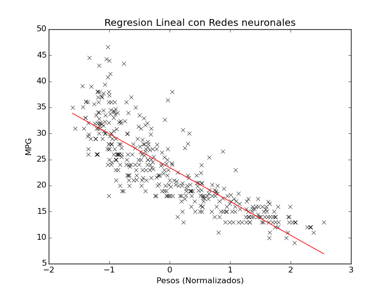
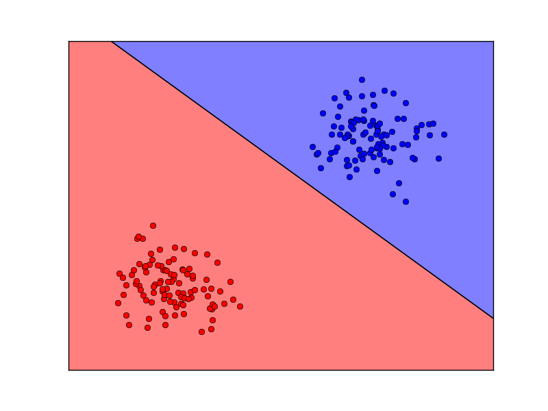
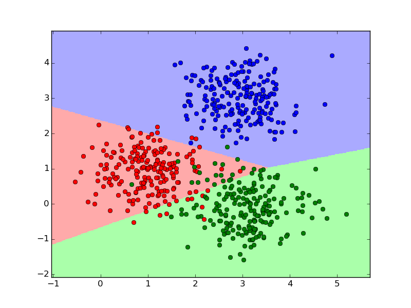
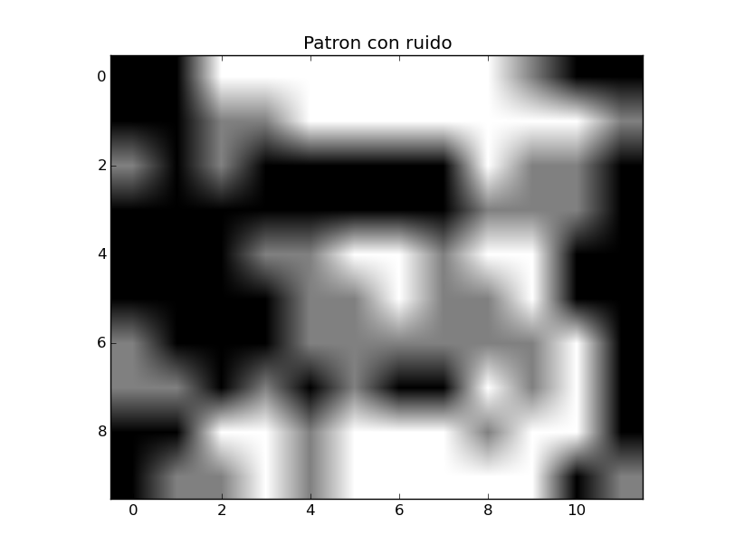
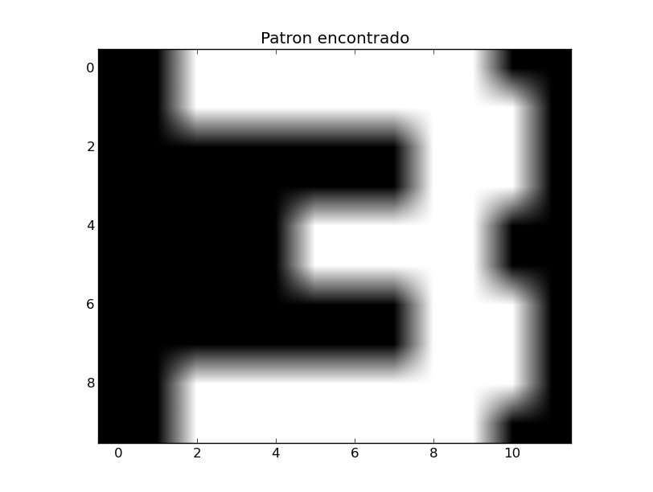
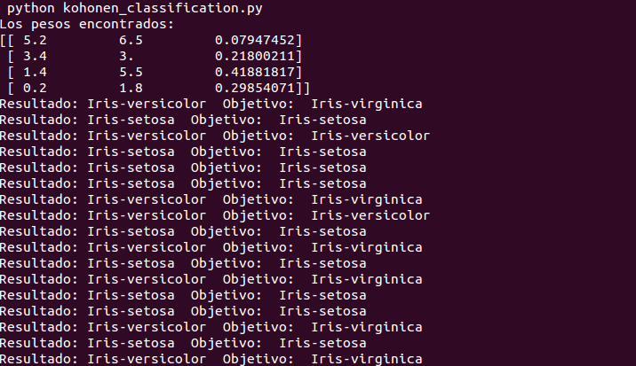
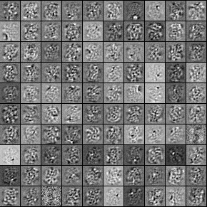

python regresion_lineal_nn.py

python logistic_regression_nn.py

python logistic_regression_multiclass_nn.py

Patrón recuperado
Dataset: Cloud Hopfield Network: Analysis and simulationpython hopfield_nn.py

python kohonen_classification.py

python autoencoders_nn.py 100